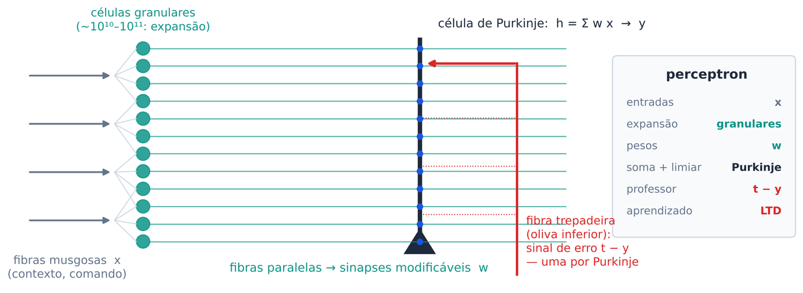

Atividades em sala. Identifique-se abaixo, faça cada atividade quando o professor pedir e toque em Enviar — sua resposta fica registrada e o gabarito aparece em seguida.
Atividade 1 · 4 min · individual, com calculadora
Repouso: −70 mV. Limiar: −55 mV. Cada EPSP: +0,5 mV, decaindo com τ ≈ 20 ms. O neurônio tem 10.000 sinapses.
aQuantas entradas precisam chegar ao mesmo tempo para o neurônio disparar?
bQue fração das 10.000 sinapses é isso (em %)?
cUma única sinapse disparando a 200 Hz leva o neurônio ao limiar?
dUma sinapse inibitória produz um IPSP de −2 mV. Quantos EPSPs ela cancela?
Atividade 2 · 5 min · em duplas
τ dV/dt = −(V − Vₗ) + R·I; quando V ≥ Vθ, o neurônio dispara e volta a Vₗ, com 2 ms de período refratário. Parâmetros: τ = 20 ms, R = 10 MΩ, Vθ − Vₗ = 15 mV. Fórmula: r = 1 / [tref + τ·ln(R·I / (R·I − 15 mV))]; ln 2 ≈ 0,69.
aQual a corrente de limiar Iθ?
bQual a taxa de disparo para I = 3 nA (τ = 20 ms)?
cQual a taxa máxima possível, para corrente muito alta?
dSe τ dobrar para 40 ms, o que acontece com a corrente de limiar? E qual a nova taxa a 3 nA?
eQue propriedade do neurônio CA1 (Aula 1) este modelo ainda não tem? (Ligue a adaptação acima e compare.)
Atividade 3 · 5 min · em duplas
Regra: y = 1 se Σ wⱼxⱼ ≥ θ, senão y = 0. Escolha pesos (podem ser negativos) e o limiar. A tabela-verdade é conferida na hora: cada caixinha mostra entradas → saída.
Atividade 4 · 4 min · individual · opcional
Escolha uma função e tente achar uma reta que separe os pontos ● (saída 1) dos ○ (saída 0).
aQuais funções são linearmente separáveis? (marque todas)
bExistem 16 funções booleanas de duas entradas. Quantas um único neurônio consegue computar?
Atividade 5 · 7 min · em duplas, no papel
Função E (AND). Início: w₁ = w₂ = 0, b = 0, η = 1. Ordem: (0,0), (0,1), (1,0), (1,1). Saída: y = 1 se w₁x₁ + w₂x₂ + b > 0. Regra: Δwⱼ = η(t − y)xⱼ, Δb = η(t − y).
aFaça à mão: pesos ao fim da época 1 e da época 2.
bAgora confira no simulador e continue até uma época sem erros. Quais os pesos finais?
| época | x₁x₂ | t | h | y | t−y | w₁ w₂ b |
|---|
cTroque para XOR e rode várias épocas. O que acontece, e por quê?
Atividade 6 · 4 min · em duplas

Associe cada estrutura ao seu papel no perceptron.
bônusQuantas fibras trepadeiras contactam cada célula de Purkinje?
Atividade 7 · 4 min · individual · opcional
aUma célula de Purkinje com 80.000 sinapses classifica até quantos padrões aleatórios?
C = computacional (o quê e por quê) · A = algorítmico (como) · I = implementação (com quê)